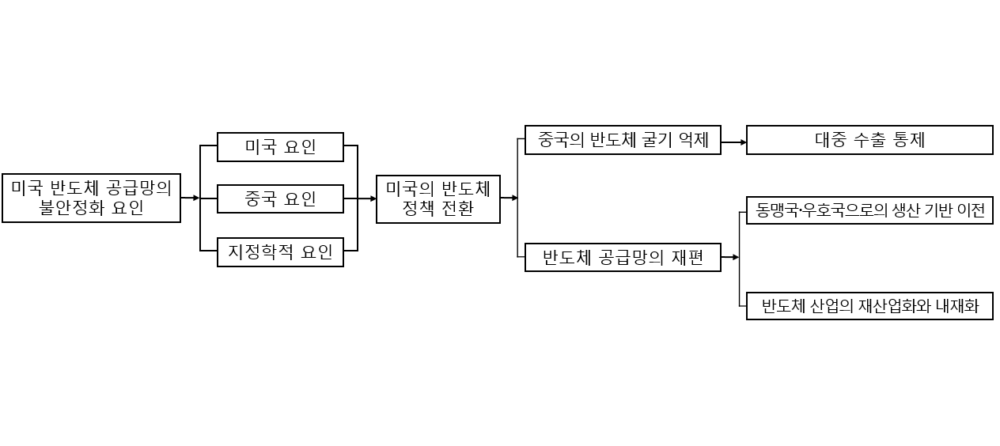
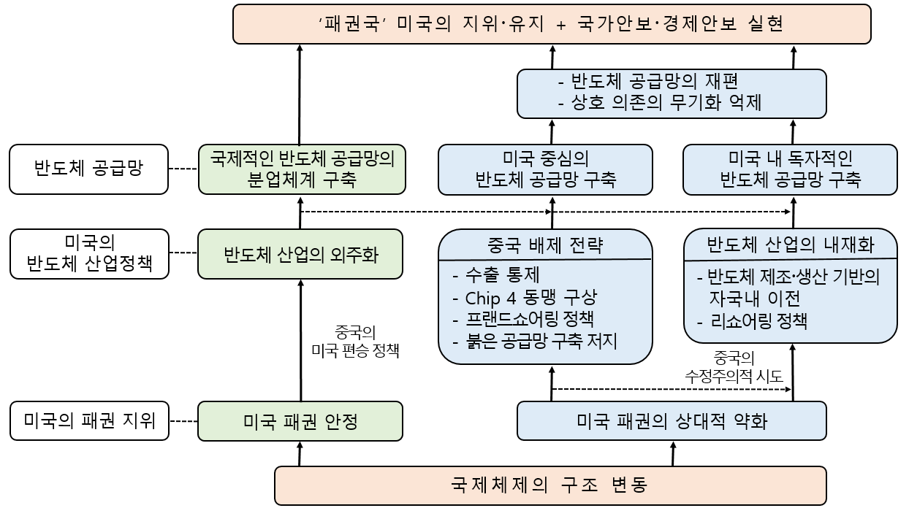

미국의 패권과 반도체 정책의 역설
초록
21세기에 들어 미·중 양국의 갈등은 핵심적 이익을 둘러싸고 다층적 영역에서 전개되고 있으며, 그 갈등의 기저에는 미국 패권의 상대적 약화가 내재해 있다. 미국은 중국의 패권 도전을 극복하기 위해 인공지능, 로봇, 5G, 자율 무기체계, 인공위성 등의 산업에서 중국보다 압도적 우위를 확보해야 하는데, 이러한 핵심산업과 떼려야 뗄 수 없는 것이 바로 반도체이다. 반도체는 경제적 영역뿐만 아니라 군사·안보 관련 첨단 무기에서도 결정적인 역할을 하는 민군 겸용(dual use) 기술로 향후 미·중 패권 경쟁의 방향을 가르는 변곡점이 될 것이다. 현재까지 미국은 반도체 경쟁에서 중국보다 압도적 기술 우위를 가지고 있지만, 미국 반도체 산업의 특수성과 중국의 반도체 정책, 그리고 동아시아 지역 질서의 불안정성 등에 의해 반도체 공급망의 취약성에 직면할 개연성이 있다.
본 연구는 미국 반도체 정책이 경제 논리에서 경제 안보의 시각으로 변화하게 된 원인을 미국 요인, 중국 요인, 지정학적 요인 등에 초점을 맞추어 규명하고, 그것이 미국의 반도체 정책에 어떤 변화를 초래한 것인지를 분석한다. 이러한 분석은 현재 진행되고 있는 반도체를 둘러싼 미·중 갈등의 본질, 과정, 그리고 전망에 대한 체계적인 이해와 함께 한국 반도체 기업의 전략 수립에 의미 있는 시사점을 줄 것이다.
주제어: 패권, 반도체, 반도체 공급망의 재편, 리쇼어링·프랜드쇼어링, 중국의 반도체 굴기
1. 서론
21세기로 접어들면서 미·중 양국의 갈등은 핵심적 이익을 둘러싸고 다층적 영역에서 발생하고 있어 그 해법을 모색하기가 쉽지 않다. 특히 이러한 갈등의 이면에는 중국경제의 급성장과 미국경제의 침체라는 대조적인 경제 상황이 내재해 있다. 중국은 자국의 경제력을 바탕으로 미국의 패권적 질서에 도전하겠다는 정치적 의지를 공공연하게 표출하고 있으며, 미국은 이러한 중국의 움직임을 자국 중심의 국제질서에 대한 도전으로 규정하고 이를 철저히 봉쇄하겠다는 방침이다.
1972년 미·중 양국의 국교 회복 및 1979년 국교 정상화 이후, 미국은 소련 봉쇄를 위해 대중국 포용 정책을 취했고, 중국도 미국의 패권적 질서에 순응하며 경제발전을 도모했다. 이러한 미국의 정책은 1991년 소연방의 붕괴 이후에도 지속되었는데, 이러한 이면에는 미·중 간 GDP 차이가 17배 이상 벌어져 있다는 ‘우월의식’이 내재해 있었다. 하지만 미·중 간 경제 격차는 2000년 이후 빠르게 줄어들었고, 오히려 2010년을 전후하여 중국이 일부 공업 제품에서 미국을 추월하기 시작했다.23
이러한 미·중 간 경제 현실은 2016년 1월 다보스포럼에서 제기된 제4차 산업혁명 시대 개막과 맞물려 양국 갈등을 한층 격화시켰다. 제4차 산업혁명은 인공지능, 산업 로봇, 자율주행 자동차, 5G, 사물 인터넷 등의 영역을 중심으로 최첨단 기술의 융합과 발전을 요구하는데, 그 중심에 반도체가 있었다. 이러한 반도체(지능형 반도체)는 경제적 영역뿐만 아니라 전투 로봇, 자율 무기체계, 인공위성, 양자 ICT 등의 군사·안보 관련 첨단 무기의 작동에도 핵심적인 역할을 한다. 이러한 점에서 반도체는 민군 겸용(dual use) 기술이며 향후 미·중 패권 경쟁의 승패를 가르는 변곡점이 될 수 있다.
미국은 현재까지 반도체 경쟁에서 중국보다 압도적 우위를 점하고 있지만, 중국이 반도체 후발 주자의 지위 탈피를 목표로 공격적 투자와 기술 개발을 추진하는 것을 우려하고 있다. 이에 미국은 2022년 8월 글로벌 반도체 가치사슬에서 중국을 배제하고 반도체 산업의 재산업화와 내재화 정책을 추진하기 위해 ‘반도체와 과학법’(CHIPS and Science Act)을 제정했다. 이를 통해 미국은 중국의 반도체 굴기를 억제하는 동시에 반도체 공급망을 안정적으로 확보하려고 했다. 특히 미국 반도체 산업의 특수성과 반도체 제조 및 생산 기반의 동아시아 지역 편중이라는 지정학적 요인에 의해 발생할 수 있는 첨단 반도체의 수급 불안정 문제를 해소하려고 했다.
실제로 미국은 2020년 코로나19 사태 및 2021년 자연재해로 반도체 공급이 제때 이루어지지 않아 산업현장에서 생산이 일시적으로 중단되는 사태에 직면했다. 여기에 동아시아 지역에 반도체 제조에 필요한 생산 시설이 집중된 상황에서 이 지역에서의 군사적 충돌은 ‘상호 의존의 무기화’ 가능성을 현실의 문제로 변화시킬 수 있었다. 이러한 일이 실제로 일어난다면, 미국의 반도체 부족 현상은 심각한 정치·경제적 문제를 초래할 수밖에 없었다. 현재 글로벌 반도체 시장에서 미국이 55% 이상을 차지하고, 동맹국·우호국을 포함하면 85% 이상을 차지하고 있음에도 반도체 공급망의 안정적 확보 및 재산업화와 내재화 정책을 추진하는 이유가 바로 여기에 있다.
한편, 중국은 제4차 산업혁명의 핵심 부품인 첨단 반도체의 안정적 확보가 수반되지 않으면 경제발전이 불가능할 뿐만 아니라 미국과의 패권 경쟁에서 우위를 점할 수 없다고 인식했다. 이에 중국은 미국의 제재와 통제를 우회하면서 한국, 대만, 일본과의 반도체 기술 협력을 추진하는 동시에 반도체 산업에 대한 대규모 투자로 기술 혁신을 이룩하고, 자국 중심의 붉은 공급망(Red supply chain)을 구축하겠다는 점을 명확히 했다. 하지만 중국의 반도체 산업은 아직 괄목할 만한 성장을 이루지 못한 채 상당한 난관에 직면해 있다.
본 연구는 미국 반도체 정책이 경제 논리에서 경제 안보의 시각으로 변화하게 된 원인을 미국 요인, 중국 요인, 지정학적 요인 등에 초점을 맞추어 규명하고, 그것이 미국의 반도체 정책에 어떤 변화를 초래한 것인지를 분석한다(<그림 1> 참조). 이러한 분석은 현재 반도체를 둘러싼 미·중 갈등의 본질, 과정, 그리고 전망에 대한 체계적인 이해와 함께 한국 반도체 기업의 전략 수립에 의미 있는 시사점을 줄 것이다.

* 자료 : 저자 직접 작성.
2. 미국 반도체 산업의 동향과 공급망의 불안정화 요인
1) 미국 반도체 산업의 동향: 국제적 분업화와 효율화 추진
미국의 반도체 산업은 자국의 패권과 밀접히 관련되어 있다. 1945년 제2차 세계대전이 끝난 후 미·소를 대립축으로 냉전이 형성되었지만, 미국은 전쟁을 통해 소련과 비교할 수 없을 정도로 강대해졌고, 미국 중심의 국제질서인 팍스 아메리카나(Pax Americana)를 창출해 냈다. 반도체 산업은 이러한 팍스 아메리카나 시기에 시작되어 미국의 절대적 우위 하에서 발전을 거듭했다. 이러한 사실은 1985년 미국에서 3,000만 대의 개인용 PC 보급이 이루어졌던 반면, 소련에서 5만 대의 개인용 컴퓨터가 있었던 것에서 확인할 수 있다.
1980년대 들어 미국의 반도체 산업은 종합 반도체 기업에서 탈피하여 설계(fabless)와 소프트웨어에 집중하고, 제조(foundry)·조립을 아웃소싱(outsourcing)했다. 이러한 반도체 정책의 전환으로 미국의 동맹국 및 우호국에서 반도체 기업이 만들어지고 성장할 수 있게 되었다. 그 결과 한국, 일본, 대만, 중국 등의 주요 기업이 반도체 생산 공정의 특정 과정에서 우위를 점하면서 반도체 공급망의 분업화가 이루어졌다. 즉 미국의 패권적 지위에 기반한 국제적인 분업 구조가 형성되었다(정희철 외, 2020).
이러한 반도체 산업에서의 글로벌 가치사슬은 중국이 미국의 패권적 지위를 인정하고, 그 속에서 발전을 추구해 나갈 때까지는 안정적으로 유지되었다. 하지만 2010년을 전후하여 중국이 일본을 제치고 세계 제2위의 경제 대국으로 성장하고, 동시에 글로벌 제조업 생산 비중에서 미국을 추월하면서 큰 변화가 발생했다(张军, 2018). 중국은 이러한 경제성장에 고무되어 미국의 패권에 도전하겠다는 의지를 노골적으로 드러내는 동시에 반도체 후발 주자의 한계를 극복하기 위해 ‘반도체 산업 발전 추진 개요’를 발표하고 해외의 주요 반도체 기업을 인수·합병하려고 했다.
이러한 중국의 움직임은 반도체의 설계와 제조를 분업화하여 공급망의 최적화와 효율화를 실현하려던 미국의 전략에 커다란 한계를 초래했다. 미국은 글로벌 가치사슬이 예상하지 못한 경우에 전략적 취약성으로 전환하여 심각한 경제 안보 위기를 초래할 수 있다는 점을 인식하게 되었다.

* 자료 : 저자 직접 작성.
2) 반도체 공급망의 불안정화 요인
위에서 설명한 바 있듯이, 2020년을 전후하여 미국의 반도체 정책은 기존의 국제적인 분업화와 효율화에서 탈피하여 공급망의 안정적 확보로 전환하게 되었다. 이러한 미국의 반도체 정책 전환의 이면에는 중국의 반도체 굴기를 차단하는 동시에 반도체 공급망을 안정적으로 확보하겠다는 정치적 의지가 강하게 작용했다. 미국은 세 가지 이유로 반도체 공급망이 불안정하게 될 수 있다고 보았다.
첫째로, 미국 측 요인으로 자국 반도체 산업의 특수성이다. 현재 미국의 반도체 산업은 1970년대 중반부터 반도체 제조 및 생산 공정을 외주화한 결과, 반도체 제조의 각 공정에 필요한 부품을 해외 기업에 전적으로 의존하고 있다(이기완, 2024).
이러한 반도체 제조 및 생산 공정에 대한 해외 기업의 의존으로 자국 기업은 10nm 이하의 반도체를 자체적으로 생산할 수 없으며, 심지어 설계 전문기업도 자국 내에 파운드리 공장이 없다(정해정, 2022). 그런데 최근 미·중 간 갈등 심화는 중국이 반도체 후공정에서 우위를 차지하고 있는 상황에서 반도체 공급망의 국제적 분업화가 정상적으로 작동하지 못하게 될 때 반도체 산업과 기업, 그리고 국가 경제 전반을 심대하게 위협하는 ‘무기’가 될 수 있었다. 즉 국가 간 관계가 우호적일 때는 상호 의존이 경제적 이득을 가져오지만, 그 반대일 때에는 그러한 의존이 전략적 취약성을 한층 심화시키는 ‘야누스’가 될 수 있다(오종택, 전광호, 2021).
둘째로, 중국 측 요인으로 중국의 급속한 경제발전과 붉은 공급망 구축 시도이다. 1978년 개혁·개방을 시작한 중국은 전후 미국이 창출한 국제 경제질서에 편승하여 발전을 모색하는 ‘국가 자본주의’ 전략을 채택했다. 이러한 국가 전략하에서 중국은 급속한 경제성장을 실현하여 세계 경제의 한 축을 이루게 되었다. 하지만 이러한 중국의 경제성장은 미국의 대중 무역수지 적자를 심화시켰고, 미국의 대중국 정책 전환을 초래하는 계기가 되었다(이기완, 2026). 문제는 미국의 대중국 정책 전환이 중국의 제조업 생산에 필수적인 반도체 수급 문제와 함께 인공지능, 로봇, 위성 등에 없어서는 안 되는 첨단 반도체의 확보를 어렵게 하는 요인이 되었다.4
그런데 반도체 수급 불안정은 중국의 경제발전에 커다란 저해 요인이 될 수 있었다. 왜냐하면 중국은 반도체 자체 생산 능력이 턱없이 부족하여 전 세계에서 생산되는 반도체의 60% 이상을 수입하고 있었기 때문이다(KIEP 북경사무소, 2021). 또한 미국이 반도체에 대한 원천기술 사전 승인 제도를 이용하여 중국으로 수출되는 반도체 장비를 통제하고 있었기 때문이다. 이러한 한계를 극복하지 않고 미국을 따라잡을 수 없다고 판단한 중국은 국가 주도로 반도체 굴기를 실현하여 미국 중심의 반도체 가치사슬을 중국 중심의 새로운 붉은 공급망으로 대체하겠다는 의지를 표명했다.
미국은 중국이 ‘반도체 산업 발전 추진 개요’와 ‘중국 제조 2025’를 토대로 반도체 기술 혁신과 자체 자급률 70%의 목표를 실현할 경우, 안정적인 반도체 공급망의 교란뿐만 아니라 미국의 기술적 우위도 급격히 무너질 수 있다고 판단하여 이를 억제하기 위한 다양한 정책적 수단을 동원하지 않을 수 없었다.
셋째로, 지정학적 요인으로 동아시아 지역 질서의 불안정에 의한 공급망의 대혼란이다. 냉전 시기 미국의 경제력과 군사력에 힘입어 안정적으로 유지되던 동아시아 국제질서는 급속한 경제성장을 바탕으로 수정주의적 태도를 강화하는 중국과 핵 능력의 고도화를 토대로 공세적 정책을 강화하는 북한에 의해 한층 불안정해졌다. 또한 러시아-우크라이나 전쟁과 미·중 전략 경쟁으로 형성된 북·중·러 3각 연대도 동아시아 국가 간 무력 충돌의 가능성을 높였다(여현철, 이기완, 2024).
미국은 동아시아 지역에서 전쟁이 발발하게 되면, 국지전이 대규모 전쟁으로 확대될 개연성이 크고, 그렇게 되면 반도체 공급망에 심각한 교란이 발생하여 자국 경제에 심대한 영향을 미칠 수 있다고 보았다. 왜냐하면 반도체 생산 공정에 있어 핵심적인 역할을 담당하는 국가와 기업, 즉 대만의 TSMC와 UMC, 한국의 삼성전자와 SK하이닉스, 일본의 JSR(포트 레지스트)·썸코(실리콘 웨이퍼)·스크린홀딩스(웨이퍼 세정)·로움(실리콘카바이드(SiC) 웨이퍼) 등이 동아시아 지역에 있었기 때문이다. 즉 동아시아 지역 질서의 불안정은 단순히 이 지역의 군사 안보적 문제에 국한된 것이 아니라 미국경제의 운명과 발전을 좌우할 중대한 경제 안보적 성격이 강했다. 최근 미국의 반도체 정책이 중국의 반도체 굴기 억제에서 공급망의 안정적 확보로 변화하게 된 이면에는 수정주의적 국가 간 연대 강화와 이에 따른 전쟁 가능성이 커지는 안보적 환경이 내재해 있다고 하겠다(이왕휘, 2021).
3. 미국의 반도체 정책 전환과 전략
1) 중국의 반도체 굴기 억제
미국은 자국의 패권이 상대적으로 약화되는 근저에 중국의 경제적 영향력 확대가 있다고 보고 이를 억제하기 위한 다양한 대중국 압박 정책을 추진했다. 미국의 대중국 경제정책은 한편으로 중국산 제품에 대해 고율 관세를 부과하여 대중국 무역수지 적자를 줄이고, 다른 한편으로 제4차 산업혁명을 주도하는 핵심 산업에서 중국의 기술적 추격을 따돌리는 데 초점이 맞추어져 있었다. 전자는 트럼프 1기 행정부 때 중국산 제품에 대한 관세 부과(한석희, 이정훈, 2020)와 2025년 트럼프 2기 행정부 때 기본 관세에 상호 관세를 더하는 방식의 고율 관세 부과였고, 후자는 반도체 산업을 중심으로 한 수출통제 정책이었다.
미국은 중국이 2014년 ‘반도체 산업 발전 추진 개요’와 2015년 ‘중국 제조 2025’를 통해 반도체 굴기를 실현하여 미국 주도의 반도체 가치사슬을 중국 중심의 붉은 공급망으로 전환하겠다는 공개적인 도전에 충격을 받았다. 이러한 중국의 목표가 실현된다면 미국의 기술적 패권은 무너지고 중국 주도의 새로운 국제질서가 도래할 것으로 보았다. 미국은 모든 수단을 동원해서라도 이러한 상황이 발생하는 것을 막지 않으면 안 되었고, 그 귀결이 반도체 수출통제였다(허난이, 박수령, 문희은, 2023).
미국은 중국의 반도체 굴기를 억제하기 위해 중국 기업의 반도체 기업 인수·합병 엄격 심사와 중국으로의 반도체 장비 수출 시 미국의 사전 승인 의무 등의 조치를 발표했다. 우선 미국은 중국 정부의 막대한 자금 지원 하에 중국 기업이 해외의 반도체 기업에 대한 인수·합병을 통해 반도체 기술 혁신을 도모할 것으로 보았다. 이에 미국은 외국인투자위원회(CFIUS)를 내세워 중국의 이러한 시도를 좌절시켰다. 그 대표적인 사례로는 2015년 칭화유니에 의한 웨스턴 디지털과 리청 테크놀로지 등의 반도체 기업 인수·합병 저지를 들 수 있다.
다음으로 미국의 산업안보국(BIS)은 수출관리규정(EAR)을 근거로 민군 겸용 기술인 반도체의 군사적 이용을 차단하겠다는 명분 하에 주요 반도체 기업들에 대해 반도체 생산 장비를 중국에 수출하기 전에 사전 심사를 의무적으로 받도록 했다(최진백, 2023). 이러한 미국의 대중 수출통제와 인수·합병 금지로 인해 중국의 반도체 산업은 다른 산업 분야에 비해 기술 혁신이 매우 더디게 진행되었다(권석준, 2022). 그 결과 ‘중국 제조 2025’에서 2025년 목표로 설정한 70%에서 크게 밑도는 20~30%만을 달성하는 데 그쳤다. 더 나아가 미국은 최첨단 반도체 개발을 위한 동맹국·우호국의 핵심 반도체 기업과의 컨소시엄 구성 과정에서 중국을 배제하고 있으며, 네덜란드의 ASML(노광장비)처럼 이러한 미국의 정책에 적극 동참하는 기업들도 나타나고 있다.
2) 반도체 공급망의 재편
2.1) 동맹국·우호국으로의 생산 기반 이전
미국은 반도체 산업에서 중국의 추격을 따돌리고 공급망의 안정화를 위해 동맹국·우호국으로 반도체 생산 기반을 이전하는 프랜드쇼어링(friend-shoring) 정책을 추진했다. 또한 미국은 세계 반도체 시장에서 점유율 2위 한국, 3위 대만, 4위 일본과 반도체 동맹을 결성하여 중국을 국제적인 반도체 가치사슬에서 배제하려고 했다. 이러한 미국의 정책 방향은 동맹국·우호국에 대해 손실과 이익의 딜레마를 초래했다.
미국의 반도체 기업뿐만 아니라 동맹국·우호국의 주요 반도체 기업은 미국의 수출관리규정으로 대중국 수출에서 상당한 어려움에 직면했다. 설상가상으로 이러한 상황에서 프랜드쇼어링과 반도체 동맹을 강요받게 될 경우, 반도체의 최대 수입처인 중국 시장을 포기해야만 하는 상황에 직면할 수도 있다. 그런데 문제는 주요 반도체 기업의 이익-손실 격차가 크게 벌어지기 시작하면, 이 기업들이 미국의 반도체 정책에 반발할 개연성도 그에 비례하여 증가하게 된다는 것이다. 이러한 딜레마를 어떻게 해소할지가 반도체 관련 미국의 대중 수출통제 정책의 성패를 결정할 것으로 보인다.
다른 한편으로 중국의 반도체 굴기 억제와 반도체 공급망에서의 중국 배제라는 미국의 반도체 정책은 한국, 일본, 대만 등의 주요 반도체 기업에는 중국 반도체 기업과의 격차를 벌릴 수 있는 시간이 된다는 점에서 장기적인 관점에서는 이익이 될 수 있다. 최근 일본은 구마모토현에 대만의 TSMC 공장을 유치하여 반도체 산업의 부흥을 도모하고 있다. 1980년대 일본의 반도체 산업은 세계 반도체 시장에서 50% 이상을 점유했지만, 미·일 간 반도체 갈등과 일본 기업들의 기술 혁신 방기 속에서 추락했다. 이러한 반도체 시장 점유율 추락과는 대조적으로 일본의 반도체 기업은 소재·장비 분야에서는 여전히 기술적 우위를 확보하고 있다. 이러한 상황에서 미국의 반도체 정책은 동맹국·우호국의 반도체 생산 기반을 강화하는 데 큰 도움이 될 수 있다. 이처럼 중국을 반도체 가치사슬에서 배제하려는 미국의 반도체 정책은 미국과 동맹국·우호국의 반도체 기업에는 단기적 손실과 장기적 이익이라는 성격을 동시에 가지고 있다.
2.2) 반도체 산업의 재산업화와 내재화
미국은 반도체 공급망을 안정적으로 확보하기 위해 동맹국·우호국과의 반도체 협력을 강화하는 동시에 동맹국으로 반도체 생산 기반을 이전하려는 프랜드쇼어링을 추진했다. 이러한 정책은 중국을 배제한 미국 중심의 반도체 공급망을 안정적으로 확보하겠다는 것이다. 그런데 문제는 이러한 정책만으로는 지정학적 요인에 의해 발생할 수 있는 반도체 공급망의 불확실성을 완전히 해소할 수 없다는 점이다. 따라서 미국은 지정학적 요인에 의해서도 그다지 영향받지 않는 독자적인 반도체 공급망을 자국 내에 구축할 필요가 있었다. ‘반도체와 과학법’은 바로 이러한 정책적 필요성의 산물이었다.
미국은 현재의 국제적인 반도체 분업 체계가 그대로 지속될 경우, 자국 반도체 산업의 특수성과 동아시아 지역의 지정학적 요인에 의해 불시에 공급망의 취약성에 직면할 수 있다고 보았다. 이에 미국은 자국 반도체 산업의 경쟁력 확보와 독자적인 반도체 공급망을 구축하기 위해서는 자국으로 해외의 대표적인 반도체 기업들의 생산 기반 이전과 신규 투자가 필요했다. 또한 1980년대 반도체 산업의 외주화로 인해 생산 기반이 쇠퇴했던 반도체 산업의 재산업화를 통해, 비록 자국 내에 모든 생산 공정을 갖출 수는 없다고 하더라도, 생산 공정을 안정적으로 관리할 필요가 있었다.
이에 미국은 가드레일 조항(guardrails provision)을 들어 해외 기업들이 중국에서 반도체 생산 기반의 확대 투자를 엄격히 금지하는 동시에 자국으로 반도체 생산 공정을 이전하거나 새롭게 투자하는 기업에 대해서는 ‘보조금’을 지급했다. 여기에 고율 관세라는 정책 수단을 활용하여 신규 투자를 촉진하도록 한 결과, 해외 주요 기업들의 투자가 잇따랐다. 예를 들어 한국의 삼성은 텍사스주에 370억 달러를 투자하여 반도체 파운드리 공장을 신설했고, SK하이닉스도 인디애나주에 38억 달러를 투자하여 HBM 패키지 공장을 건설했다. 또한 대만의 TSMC도 애리조나주에 2020년에 120억 달러, 2022년 650억 달러, 2025년에 1천억 달러를 투자했다.
이처럼 미국은 보조금과 고율 관세라는 정책 수단을 통해 동맹국·우호국에 수평적으로 분산되어 있던 반도체 기업들을 자국으로 유치하고 있다. 미국은 리쇼어링 정책 강화를 통해 자국 내 기업들이 사용하는 반도체를 안정적으로 공급할 수 있는 생산 공정 체계를 구축해 나갈 것이다.
4. 반도체를 둘러싼 미·중 갈등이 한국에 주는 시사점
2025년 1월 출범한 트럼프 2기 행정부는 중국을 공정한 경쟁자가 아닌 자유주의적 경제질서와 자국의 이익을 위협하는 수정주의적 국가로 규정하고 대중국 압박 정책을 한층 강화할 것임을 명확히 했다. 이러한 정책에 따라 미국은 대중국 관세를 일시적으로 145%까지 상향하는 동시에 AI·첨단 반도체에 대한 수출통제도 한층 강화했다. 중국도 이러한 미국에 맞서 대미 관세율을 일시적으로 125%까지 높이는 동시에 희토류에 대한 수출통제를 강화했다. 이러한 관세·기술을 둘러싼 갈등은 미·중 간 패권적 지위와 관련되어 발생하는 구조적 문제이기 때문에 장기간 지속될 수밖에 없을 것이다.
특히 미·중 간 반도체를 둘러싼 갈등은 한국 반도체 기업에는 상당한 부담으로 작용하고 있다. 한국은 국제적인 반도체 가치사슬의 중심에 미국이 있고, 또한 설계·제조·소프트웨어 분야를 미국이 장악하고 있는 상황에서 ‘시장 논리’만을 고려하여 중국과의 협력을 무턱대고 강화할 수 없다. 특히 시스템 반도체와 파운드리 분야에서의 성장과 시장 확보를 위해 미국과의 긴밀한 협력 관계는 매우 중요하다. 반면, 한국은 2020년 우리의 반도체 수입에서 31.2%, 수출에서 43.2%를 차지하고 있는 최대 교역 상대국인 중국을 고려하지 않고 ‘정치·군사적 관계’만을 고려하여 중국을 배제하려는 미국의 반도체 정책에 전적으로 편승할 수도 없다. 이러한 구조적 상황이 한국 반도체 기업에 대해 선택적 한계를 강요하고 있다.
하지만 현시점에서 미·중 양국은 한국 반도체 기업이 어떤 선택과 결정을 하더라도, 한국 반도체 기업의 세계적 위상과 기술 경쟁력으로 인해 제재 카드를 쉽게 꺼내 들지 못할 것이다. 그렇다고 하여 안심할 수 있는 상황은 더더욱 아니다. 왜냐하면 반도체를 둘러싼 미·중 갈등이 심화될수록 미국의 대중국 반도체 수출통제와 함께 글로벌 반도체 공급망 재편에 한국의 동참을 요구할 것이기 때문이다. 반대로 중국이 반도체 굴기에 성공한다면, 한국 반도체 기업은 중국 시장에서 기술적 경쟁력의 상실과 중국 제조 공정에 대한 의존도 상승으로 인해 큰 타격을 피할 수 없게 될 것이다.
이러한 상황을 극복할 수 있는 가장 효과적인 방법은 반도체 기술 혁신을 통해 ‘기술 자주권’을 확보하는 것이다. 한국의 반도체 기업이 세계적 기술 경쟁력을 가진 메모리 반도체 영역에서는 해외 반도체 기업과의 기술 격차를 벌려 경쟁력을 확보·유지해야 한다. 그리고 아직 확실한 우위를 점하지 못한 시스템 반도체와 파운드리 영역에서는 부단한 혁신을 통해 특히 대만의 TSMC와의 기술 격차를 줄여나가야 한다. 더 나아가 인공지능 진화 과정에서 새롭게 등장할 미지의 산업 영역에서 필요로 하는 차세대 반도체 기술 개발에도 박차를 가해 나가야 한다.
이와 동시에 반도체 관련 핵심 소재 및 장비에서 특정 국가에 대한 지나친 의존을 낮추기 위한 공급망의 다변화를 적극 모색해야 한다. 특정 국가와의 정치적 갈등이 외교적 수준에서 끝나지 않고 경제적 영역으로까지 확대될 경우, 공급망에 심각한 취약성이 초래될 수 있기 때문이다. 2019년 7월 4일 반도체 공정 핵심 소재 품목에 대한 일본의 기습적인 수출통제 강화와 8월 2일 화이트리스트 국가에서의 한국 제외 등이 바로 여기에 해당한다(이기완, 2020).
이러한 점을 고려할 때 반도체를 둘러싼 미·중 갈등을 정부 수준에서는 반도체 공급망에 대한 종합적인 재검토의 기회로, 기업 수준에서는 기술 혁신과 장기 전략 수립의 기회로 삼아야 한다. 정부와 기업의 체계적인 대응이 성과를 발휘할 수 있을 때, 비로소 한국의 반도체 산업은 어떠한 국제체제의 구조적 압력에도 크게 좌우되지 않으며, 우리 경제를 지탱하는 기둥이 될 것이다. 이러한 점에서 바로 지금, 국가-기업-노동자는 우리의 반도체 산업이 미래에도 기술 자주권을 지속적으로 확보해 나갈 방안을 진지하게 고민해야 한다.
5. 결론
지금까지 살펴본 바와 같이 반도체를 둘러싼 미·중 갈등은 단순히 반도체 산업에서의 우위 확보 문제가 아니라 1945년 제2차 세계대전이 종료된 이후 형성된 미국 중심의 국제질서에 대한 중국의 도전과 미국의 반격에서 기인하고 있다. 반도체를 처음 개발하고 혁신을 주도해 온 미국은 현재까지 세계 반도체 시장 점유율과 기술 혁신 역량에서 중국보다 압도적 우위에 있다. 이 때문에 미·중 간 반도체를 둘러싼 갈등이 격화되고 있다는 주장은 옳지 않다. 하지만 지난 시기 중국의 급속한 경제성장과 기술 발전을 고려할 때, 현재까지 중국이 반도체 경쟁에서 미국에 뒤처져 있지만, 국가적 수준에서 반도체 기술 격차를 만회하기 위한 노력을 전개하고 있다는 점에서 중국을 과소평가할 수는 없다.
문제는 반도체가 제4차 산업혁명 시대에 산업의 성패와 국가의 명운을 결정짓는 핵심적 변수로 반도체 산업의 주도권을 장악하는 국가가 패권 확보에 유리한 위치를 점하게 된다는 점이다. 이러한 연유로 미국은 자국의 국력이 상대적으로 줄어든 틈을 노려 중국이 경제력을 바탕으로 자국이 구축해 온 패권 질서에 도전하는 것을 좌시할 수 없었다. 즉 중국의 도전에 대한 미국의 반격이 바로 고율 관세, 수출통제, 그리고 반도체 공급망의 재편 등이었다. 특히 첨단 반도체에 대한 대중 수출통제와 반도체 공급망의 재편은 기술 굴기의 실현을 통해 패권국가로 발돋움하려는 중국의 국가 발전 전략 구상에 상당한 영향을 미치고 있다.
중국은 반도체를 둘러싼 미국의 대중 압박 기조가 변화할 가능성이 거의 없다고 보고, 자체적인 반도체 굴기만이 미국의 방해를 뿌리치고 패권국의 지위를 획득하는 유일한 길이라고 판단한다. 반도체 굴기 없이는 제조 산업 영역에서의 경제적 우위도 군수 산업 영역에서의 군사적 우위도 불가능하다고 판단하여 중국 정부와 반도체 기업은 모든 수단을 동원해서라도 반도체 굴기를 위한 기술 개발에 총력을 기울일 것이다. 이 때문에 반도체를 둘러싼 미·중 갈등은 시간이 갈수록 한층 격렬하게 전개되고, 그에 비례하여 국제질서가 혼돈의 상태로 빠져들 개연성이 크다고 하겠다.
참고문헌
권석준 (2022). 미중 반도체 갈등의 군사안보적 함의. 성균차이나브리프, 10(4), 101-106.
오종택, 전광호 (2021). 반도체 글로벌 가치사슬(GVC)의 정치경제학적 함의. 대한정치학회보, 29(4), 31-57.
여현철, 이기완 (2024). 국제 정세의 변화와 통일 담론의 국제화. 국제정치연구, 27(2), 25-43.
윤승환 (2024). 한국 반도체 산업의 수요 구조 분석. 경상논총, 42(3), 101-121.
이재영 (2023). 미중 공급망 경쟁과 양안 갈등 속 한국의 경제 안보 외교, KINU Online Series, 23(3), 1-5.
이기완 (2020). 일본의 수출규제 조치와 한일관계. 평화학연구, 31(3), 73-90.
이기완 (2024). 미·중 반도체 패권 경쟁과 한국의 선택: 미국 반도체 산업의 내재화를 중심으로. 국제정치연구, 27(4), 125-150.
이기완 (2026). 팍스 니포니카의 사례를 통해 미국의 대중 정책과 미·중 간 경제 관계 전망. 국제정치연구, 29(1), 291-315.
이왕휘 (2021). 국제정치적 시각에서 본 미중 반도체 경쟁. 성균차이나브리프, 9(3), 123-128.
정해정 (2022). 미중 반도체 경쟁과 한국의 대응전략 모색. 인문사회21, 13(2), 2522-2532.
최진백 (2023). 미중 간 반도체 경쟁의 안보적 의미와 전망. 주요국제문제분석, 39, 1-30.
허난이, 박수령, 문희은 (2023). 미국의 다각적인 반도체 산업정책이 국제통상체제에 미치는 영향. 통상법무정책, 6, 135-155.
한석희, 이정훈 (2020). 무역전쟁을 통해서 본 미중관계의 미래. 국제지역연구, 24(3), 79-101.
张军 (2018). 中国经济增长的源泉. 上海: 格致出版社.
KIEP 북경사무소(2021). 글로벌 반도체 공급 부족과 중국의 반도체 산업 육성 전략. KIEP 북경사무소 브리핑, 23(2), 1-18.
“시진핑, 반도체 사령탑에 ‘최측근’ 류허 낙점…‘반도체 굴기’ 강한 의지.” https://www.donga. com/news/article/all/20210617/ (검색일: 2026.4.23).
“삼성 "美텍사스에 또 251조 규모 공장"...주지사도 판사도 환호.” https://www.joongang.co.kr /article(검색일: 2026.5.12).
U.S. Department of Commerce. “Remarks by U.S. Secretary of Commerce Gina Raimondo: Investing in Leading–Edge Technology: An Update on CHIPS Act Implementation.” http://www.commerce.gov/news/speeches/2024/02 (검색일: 2024.9.29).
Semiconductor Industry Association. “CHIPS for America Act & FABS Act.” http://www.semiconductors.org/chips (검색일: 2024.10.02).
Abstract
The Paradox of U.S. Hegemony and Semiconductor Policy
In the 21st century, conflicts between the U.S. and China are occurring in multi-layered areas over core interests. And this conflict is due to the relative weakening of U.S. hegemony. The United States must secure an overwhelming advantage over China in industries such as artificial intelligence, robots, 5G, autonomous weapons systems, and satellites to overcome China's current hegemony challenge. Semiconductors are inseparable from these core industries. Semiconductors are dual-use technologies that play a decisive role in high-tech weapons related to military and security as well as economic areas. In addition, semiconductors will have a significant impact on determining the direction of the U.S.-China hegemony competition in the future. Until now, the United States has an overwhelming technological advantage over China in semiconductor competition, but it is likely to face weakness in the semiconductor supply chain due to the peculiarity of the U.S. semiconductor industry, China's semiconductor policy, and geopolitical factors in East Asia.
This study analyzes the reasons why the U.S. semiconductor industry policy has changed from an economic perspective to an economic security perspective, focusing on U.S. factors, Chinese factors, and geopolitical factors, and how it has caused changes in U.S. semiconductor policy. This analysis will help to systematically understand the nature, process, and prospects of the U.S.-China conflict over semiconductors, and will also provide meaningful implications for Korean semiconductor companies' strategy establishment.
Keywords: Hegemony, Semiconductor, Restructuring of semiconductor supply chains, Reshoring-Friend Shoring, China's rise of semiconductors